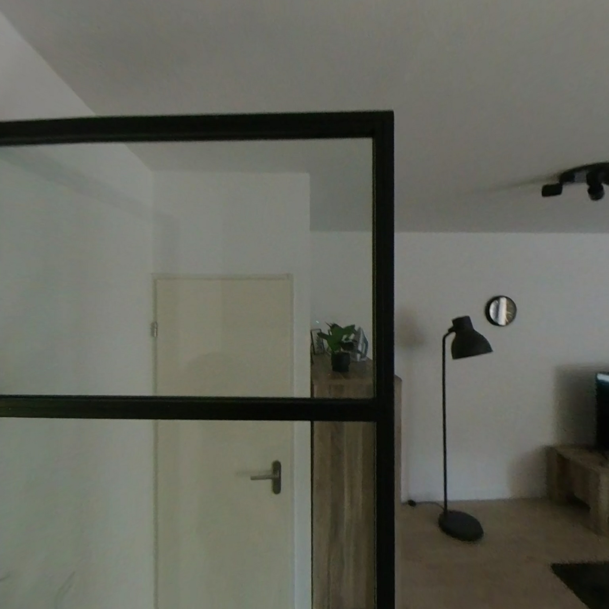

Photogrammetry showcase
Netherlands bottom floor
360° walkthrough reconstructed into an explorable 3D mesh
Click Enter walk mode, then WASD to move · mouse to look
Click here or press Walk to enter · WASD move · Shift sprint · Esc exit
What this is
A full open-source pipeline turns a single Insta360 X2 interior walkthrough into a dense 3D mesh. The camera moves through the bottom floor of a house in the Netherlands while a drone rig is masked out so photogrammetry focuses on walls, furniture, and architecture.

Sample dewarped view · Insta360 X2 equirect → perspective
Pipeline
- Extract — frames from MP4 at 5 fps
- Keyframes — sharp, well-spaced subset (~320)
- Mask — hide drone nadir (bottom 42%)
- Dewarp — 12 perspective views per frame
- COLMAP SfM — sparse cameras + point cloud
- Dense MVS — depth maps, fusion, Poisson mesh
- OpenMVS — textured OBJ export
Source code & docs
The full annotated pipeline, configs, and handoff documentation live in the project repository. Clone it to run the reconstruction on your own GPU, or browse the handoff package for architecture notes.
git clone REPO_URLAfter publishing, run handoff/scripts/Publish-Online.ps1 once to set this URL automatically.